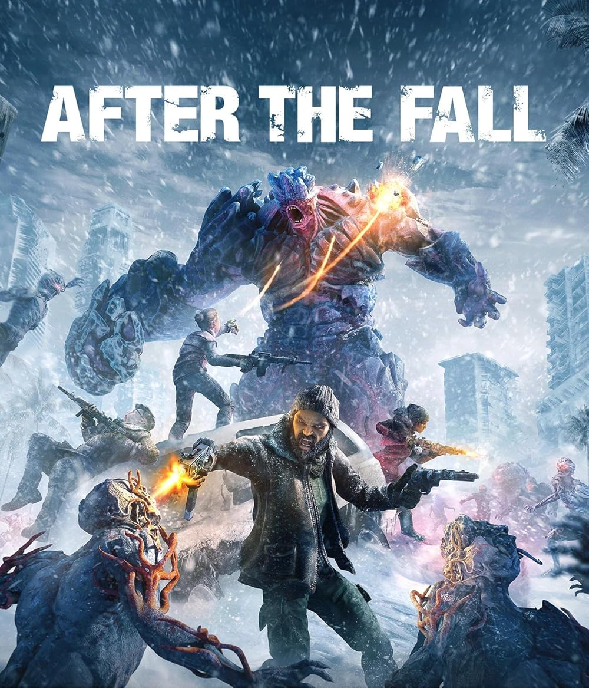

After the Fall
-
Client
Vertigo
-
Date
31-01-2021
-
Project link
PROJECT DESCRIPTION
- Role: 3D & Compositing Generalist | Contractor
- Core Stack: Maya, Redshift, Fusion Studio
- Main Focus: Asset Prep and Lookdev, Render Scene Assembly and Optimization, Technical Layer Passes, VFX Compositing
This project was a 90-second cinematic announcement trailer for a VR game, produced by a tight-knit team under a relatively short 4-month deadline.
Operating within an established, native Maya/Redshift pipeline, the project required high efficiency and versatility.
My role spanned across the lighting, rendering, and compositing stages: I handled asset preparation and lookdevelopment,
assembled and optimized render scenes within Maya, and actively stepped into the post-production phase by compositing several
select shots in Fusion Studio to ensure on-time delivery.
MY TASKS
- Asset Preparation and Lookdev: I was responsible for ingesting 3D assets into Maya, rebuilding their shader networks, and performing lookdevelopment for Redshift to match the cinematic’s art direction.
-
Scene Assembly and Render Optimization:
I set up and organized the final rendering scenes inside Maya.
I focused heavily on render optimization, tuning sampling and light settings to maintain high visual quality while keeping render times manageable under the tight schedule. - Technical Layer Segmentation: I structured the final render passes and created comprehensive technical utility layers and AOVs, ensuring a smooth and flexible handoff for the compositing workflow.
-
VFX Compositing:
For a selection of shots, I took full ownership of the final compositing inside Fusion Studio.
I integrated the 3D renders with optical effects, color-matched the passes, and handled the final image adjustments to match the established look of the trailer.